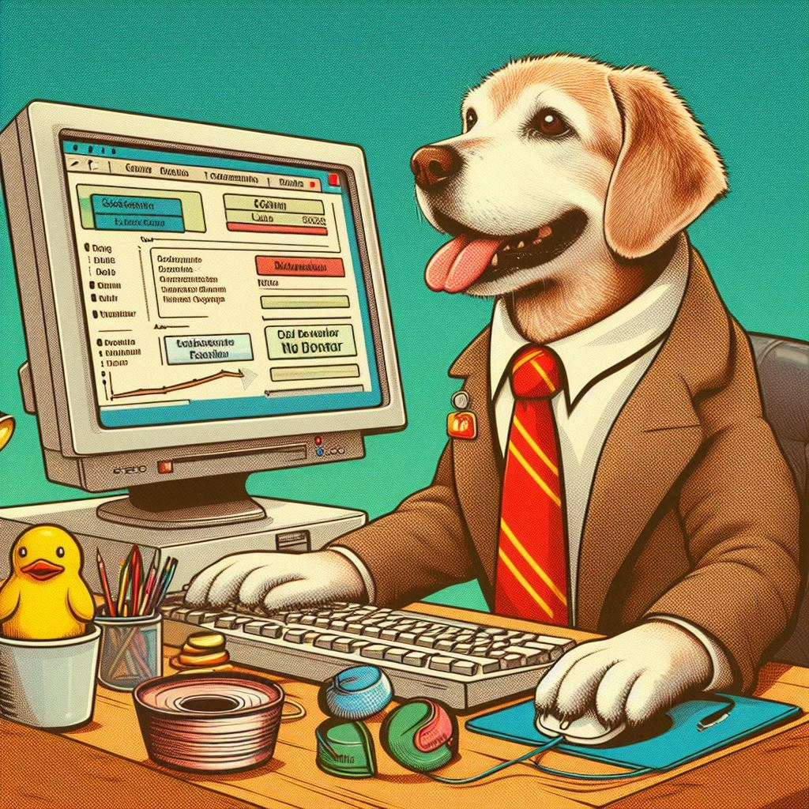
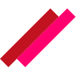

Desenvolvedor Front End & UX/UI Designer
Localizado em Recife - PE


Localizado em Recife - PE
Desenvolvo pequenos projetos como o Robocraft utilizando apenas HTML, CSS e JavaScript. Para aplicativos web, como a rede social Dogs, eu trabalhei no UX e UI Design do projeto.
No projeto Robocraft eu trabalhei no desenvolvimento completo do HTML CSS JavaScript do site. Além disso, também prestei consultoria no Design.
Minha mais recente experiência acadêmica foi o mestrado que fiz no exterior em UX Design. Além disso me mantenho sempre atualizado com cursos intensivos online.